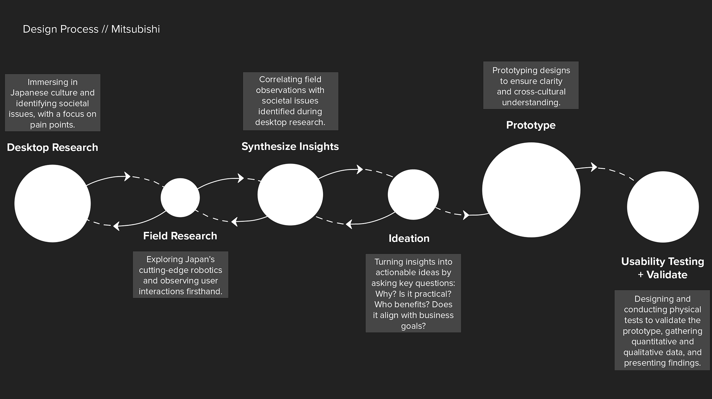
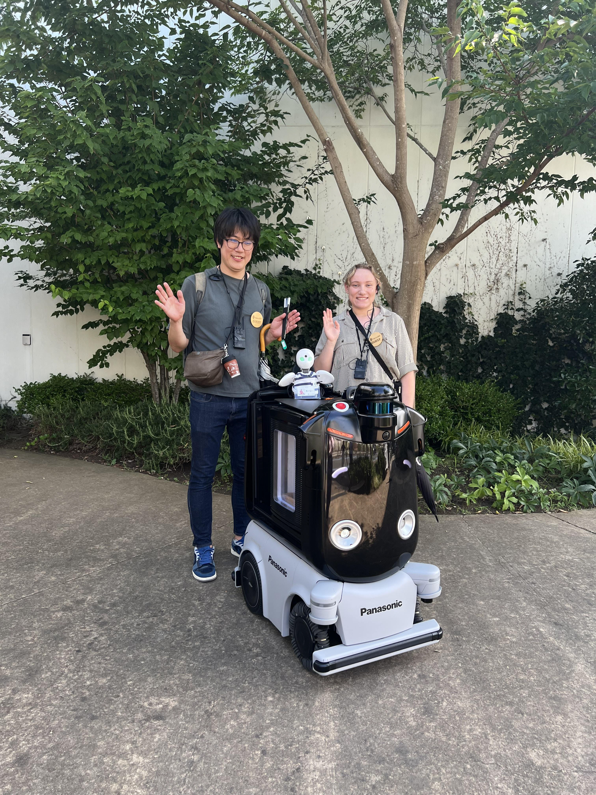

Mitsubishi Electric

As a User Experience Design Intern, I was tasked to explore the growing world of Autonomous Mobile Robots (AMRs) and their potential to promote accessibility. Through an initial ideation phase, and going through an iterative practical-decision-conversation with my manager, my chosen focus area was on designing a new line of AMRs for blind individuals—my work comes at a pivotal time with the legalization of autonomous delivery robots to operate on public roadways in Japan passing in April of this year, making this pursuit more pertinent than ever before.
From compiling comprehensive research, both via desk research and through in-person field research, to ideating my own accessible service designs for AMRs, I tried to ground my product solution in existing market technologies and research that has already been substantiated. Setting the basis of my work to the values and needs of stakeholders, I crafted a map of application ideas and envisioned the intricate journey each idea could facilitate. By learning applications like Adobe Premiere Pro and Adobe After Effects, I depicted my prototype idea in an accessible way to a large audience factoring in the language barrier. Designing and conducting user tests was a pivotal phase of my internship—it allowed me to collect valuable feedback to generate key insights and inspire change in future iterations of my prototype design. It was also a great way to bond with my coworkers across offices!
For a complete overview see my final presentation below: Mitsubishi Final Presentation →
Throughout my internship, I had the privilege to not only learn about cutting-edge robotics but also immerse myself in the culture and context that drive innovation in Japan. What I will remember most is the awesome team of designers I worked with who welcomed and helped me both in and outside of the office. Whether I needed to practice and get feedback on my final presentation or wanted good ramen shop recommendations, my coworkers always wanted to help!
I want to thank Mitsubishi Electric for providing me with this incredible opportunity! This internship has broadened my worldly views, love for design, and innovation, all of which are pathways to driving positive change.

My proposed designs are currently patented by Mitsubishi Electric, for which I am credited.